1946
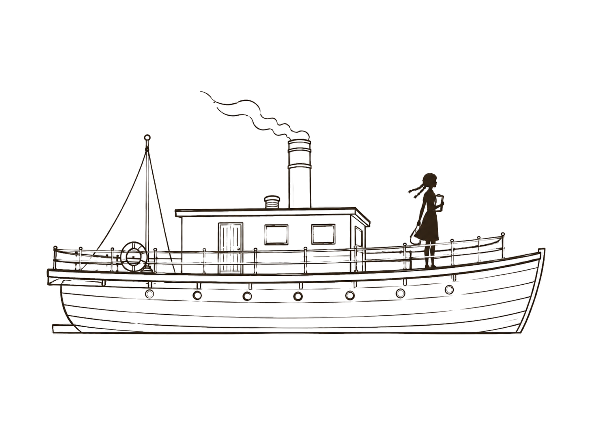
江轮 · 16 岁独自离家

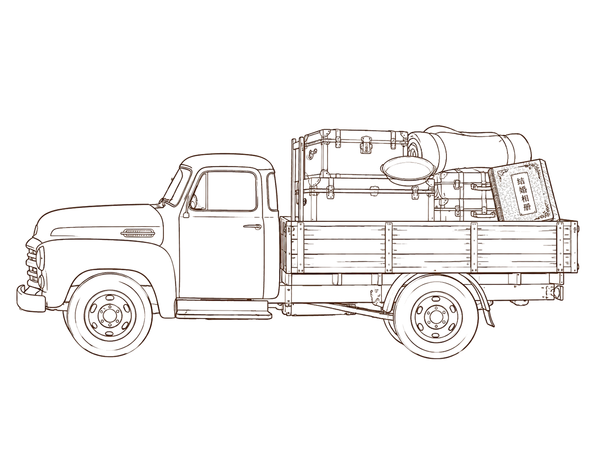
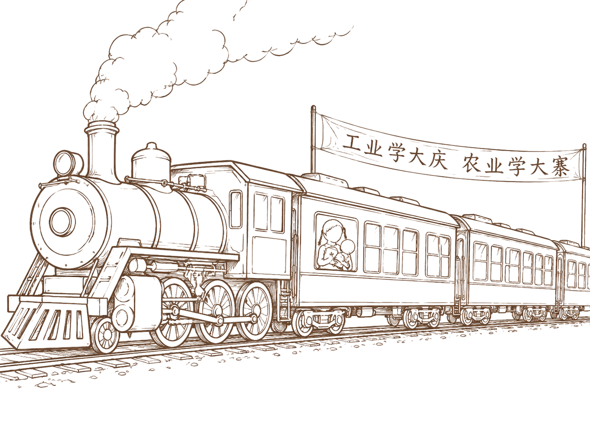
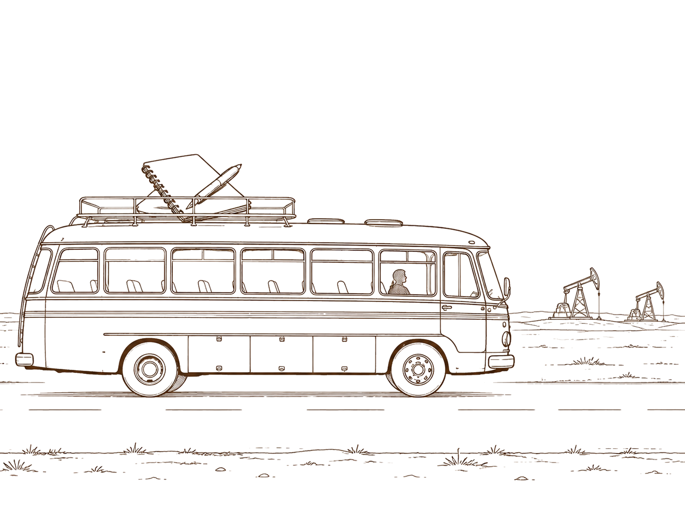
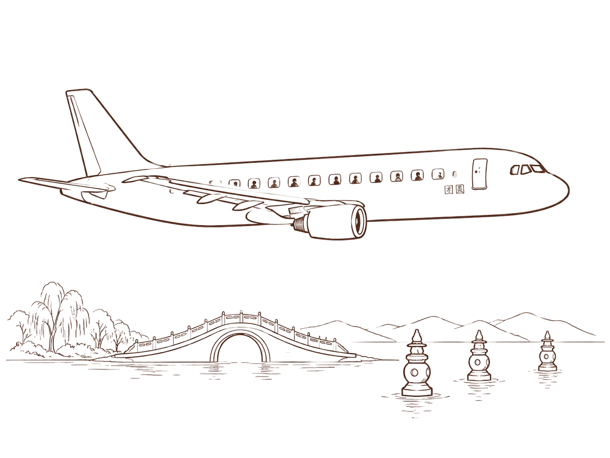
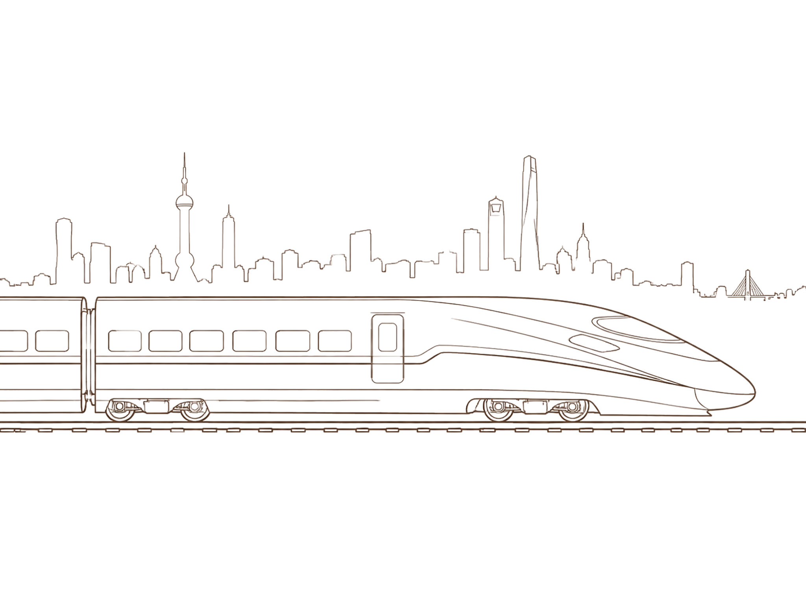
从一本书开始，经过三代人的迁移，最终回到他们来时的方向。
1946年，十七岁，她出走了。身边只有一只箱子，装下一个女孩的全部家当。
她叫范瑶珠，1931年出生于福建建瓯，在家中排行最小。社会动荡，经济紧张。家里供姐姐和哥哥读书之后，再也无力负担她的学业。父亲告知她，不再供她读大学。
她不愿放弃。听说上海的大表姐读了免费的护理学校，她便下了决心。不满十七岁，她独自拎着一只箱子，从建瓯乘船到福州，住在亲戚家，再从福州搭轮船到上海，投奔舅舅一家。
就是说那个怎么就找办法，然后去这个就难以想象。当时在没有及时通讯的情况下，然后到一个陌生的地方。 —— 口述史记录
1948年，范瑶珠进入上海伯特利高级护理助产学校。这是一所教会主办的三年制学校，穷人的孩子可以免费入学，不需要学费，毕业后由上海市卫生局统一分配工作。
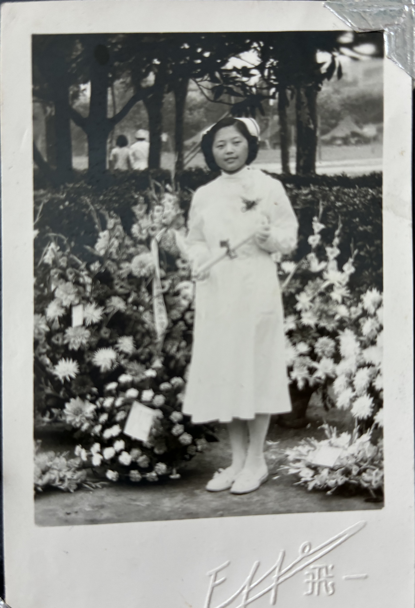
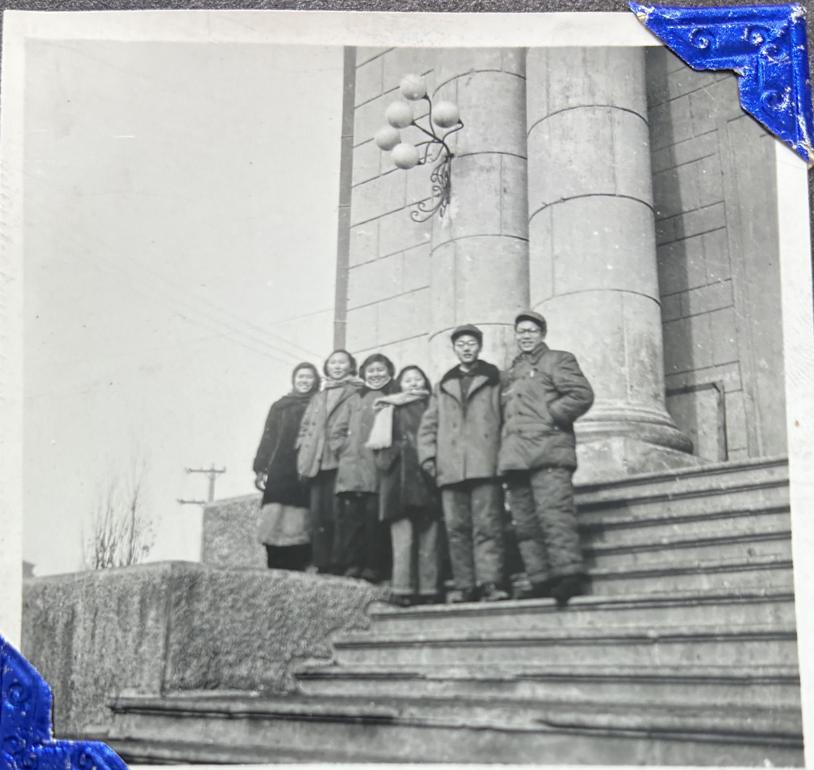
在医院实习时，范瑶珠护理一位年轻的肺结核患者：孙钢。他比她大六岁，是光华大学法律系三年级的学生。
范瑶珠和孙钢都喜爱文学。于是每次去查房，她都给他带一本不同的小说。然后，他们开始在书页里夹小纸条。
互相借小说借书看，然后在书里面夹小纸条。 —— 口述史记录
在那个没有手机，连打一通长途电话都是奢望的年代，书页间的纸条就是最私密的通信方式。她写一句，夹进书里。他读了，回一句，等下次换书时递回来。
有一次，孙钢写了一封信，称呼她为“妹妹”。范瑶珠立刻翻了脸：“不行，要摆正关系”。她追问：“你到底有几个好妹妹？”
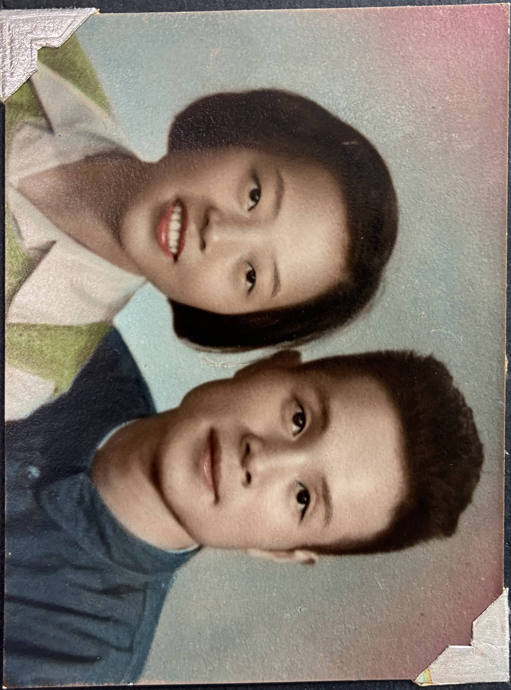
1953年，范瑶珠得知新疆缺少医务人员。国家正在号召内地青年支援边疆建设，她瞒着家人，也瞒着孙钢，主动报了名。
同年九月，范瑶珠带着箱子和装满被褥的大行囊，与来自上海各医院自愿报名的医护人员一起，开启从上海到新疆的艰辛旅程。先坐火车到达西安，再换乘敞篷卡车，坐在行李上，将外衣的腰带系上敞篷卡车高处的铁架，一路颠簸。
谁回来谁是逃兵，就是一定要坚持到底的。 —— 赴疆医疗队行至甘肃时的集体誓约
范瑶珠被分配在新疆公费医疗门诊部工作，后改为乌鲁木齐市第一人民医院，任总护士长。
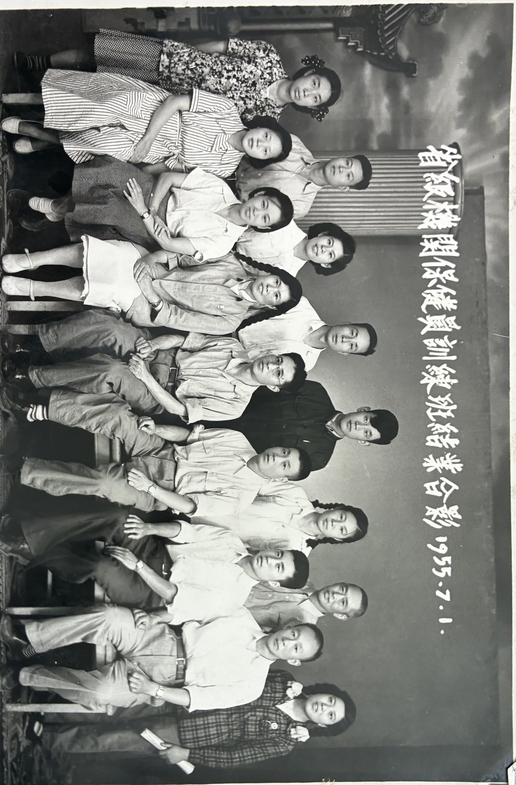
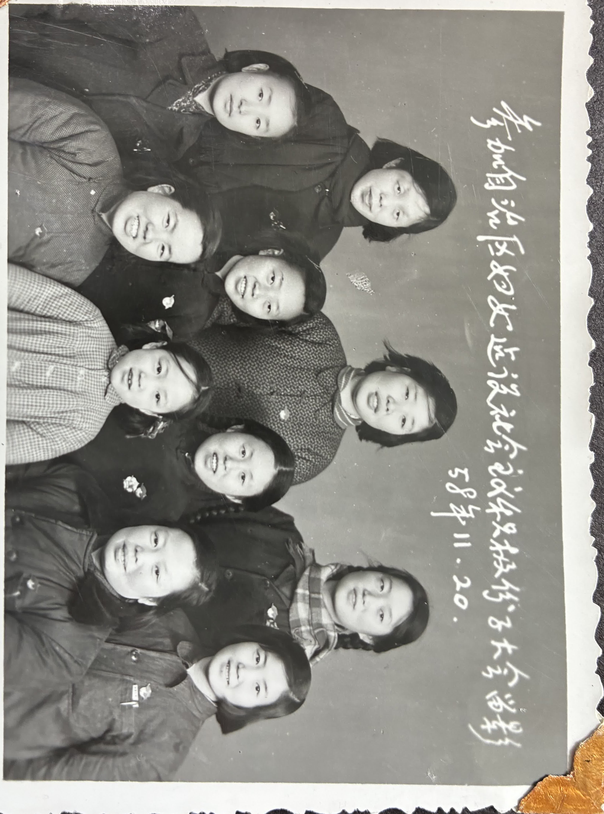
范瑶珠走后，孙钢从上海给她寄食物。然后他做了一个更彻底的决定。
1954年，上海市江湾区法院领导与孙钢谈话，准备提拔他担任更高职位。经考虑后孙钢回答，自己决定去新疆。当时没有这种个人调动的先例，组织劝其不要贸然前往，希望二人能在上海结婚，将来范瑶珠还可以调回上海工作。他坚持，最终组织上还是同意了他的选择。
当年九月，孙钢独自一人坐火车到达西安，四处寻找去新疆的人员，最终找到一个将赴新疆乌鲁木齐的秦腔剧团，搭乘他们的卡车前往乌鲁木齐。
到乌鲁木齐后，矿区贸易公司的人看见他，当场把他“抢”走了。光华大学法律系三年级。他一生的职业从此与法律无关。
1954年11月18日，公费医疗门诊部的宿舍。没有礼堂，没有宴席。几张单位的办公桌拼在一起，铺上一条白床单，摆着水果和清茶。
她后来的结婚照是在三星照像馆拍的一张“染色照片”。那个年代还没有彩色胶卷普及，黑白照片上手工涂上颜色：脸颊要染红，嘴唇要涂色，衣服上的花饰要一笔一笔地描上去。
结婚是人生最快乐的一件大事……但这种幸福带有从属性。正如巴布连科的小说《幸福》中弗罗巴耶夫所说的：好像焦煤一样是一种副产物。人生最大的幸福在于为集体事业进行创造性的劳动。 —— 赵思聪，1954年，结婚赠言
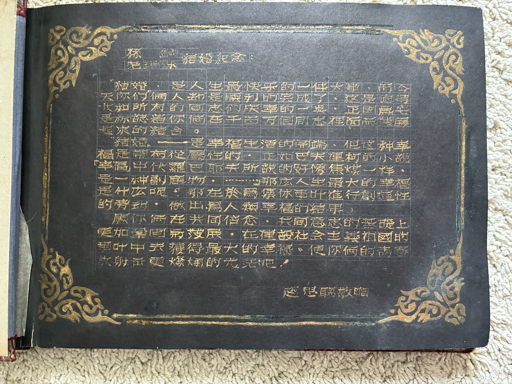
1953年上半年，新疆发生蝗灾。范瑶珠的哥哥范国桢被组织指派协同苏联专家前往新疆灭蝗。
尚在上海准备赴疆的范瑶珠接到哥哥来信，回信告知自己马上也要去新疆，希望哥哥灭蝗结束后请个假暂不返京，兄妹两个可以在新疆见一面。十月中，他们见面了。
但这次见面彻底改变了哥哥的命运。新疆省农林厅得知范国帧的妹妹来到了乌鲁木齐，以“新疆工作需要”为由，向上级申请，将他强留当地。哥哥被分配在新疆八一农学院任教，后调往新疆省农林厅。
1963年，他在哈密因脑溢血去世。
我外婆就一直对我妈妈说，是我妈妈害了他的哥哥。 —— 孙女在口述史中的回忆
1966年，文化大革命开始。工作组进驻医院，要求为子女改名。此时孙钢正在外地出差。范瑶珠感到为难。工作组成员当场为她女儿改名为孙文革。这个名字伴随了女儿十一年。
1967年2月16日，儿子出生，取名孙晓舞。仅仅几个月后，乌鲁木齐发生武斗。真枪实弹，街上流弹伤人。7月初，一直照料孙晓舞的杨奶奶由于武斗要带自己的三个外孙返回西安老家。
范瑶珠做了一个决定：将儿女托付给老人与结伴同行的邻居，由未满12岁的女儿带着5个月大的弟弟一同前往上海。
女儿只带了两本京剧《白毛女》剧照封面的相册、一罐借来的奶粉、尿布，就踏上了前往上海的路程。
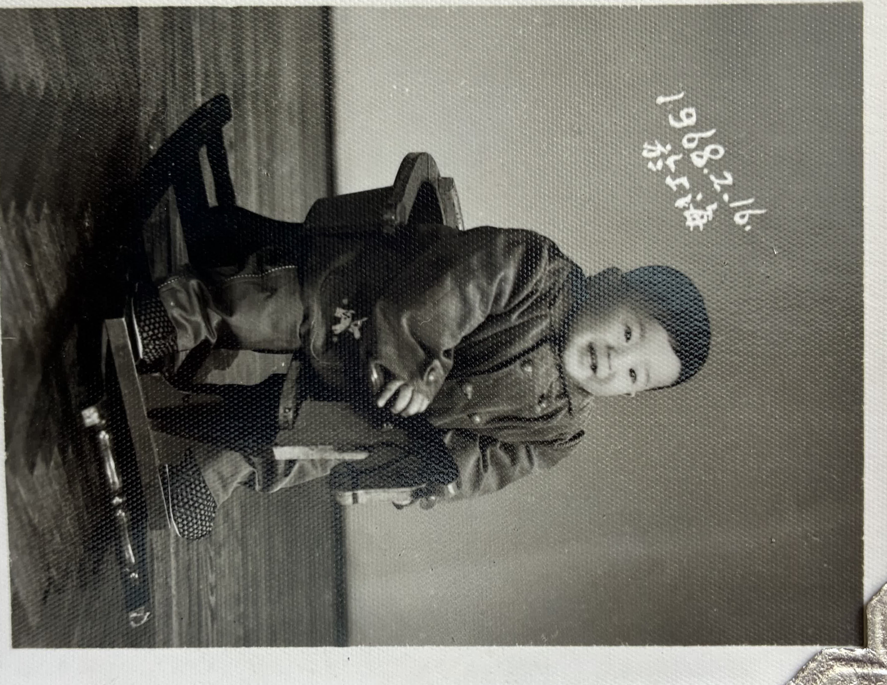
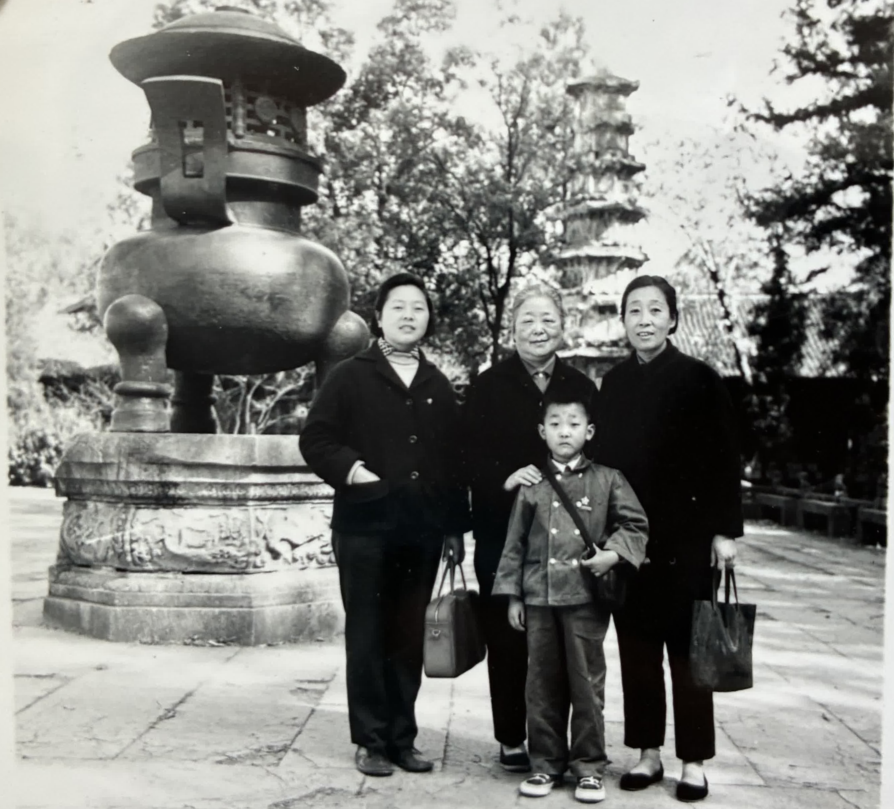
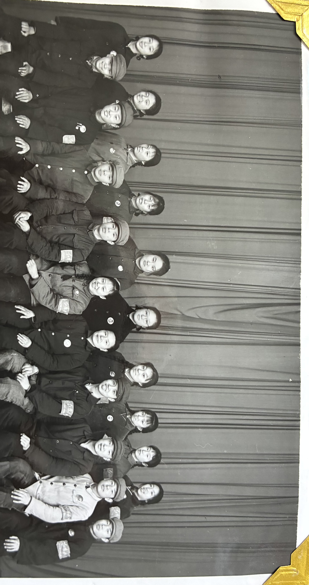
1976年8月，女儿被分配到克拉玛依油田，进入克拉玛依师范学校任教。她做了一个决定——不告诉家人，自己改名为孙葛，告别了“孙文革”。
那天，孙钢在全家福背面用钢笔题了一首绝句：
彩霞织就锦三千，展翅雄鹰万里悬。同学少年多俊迈，喜君立志战油田。金刚 76年8月29日 —— 孙钢，题于全家福照片背面
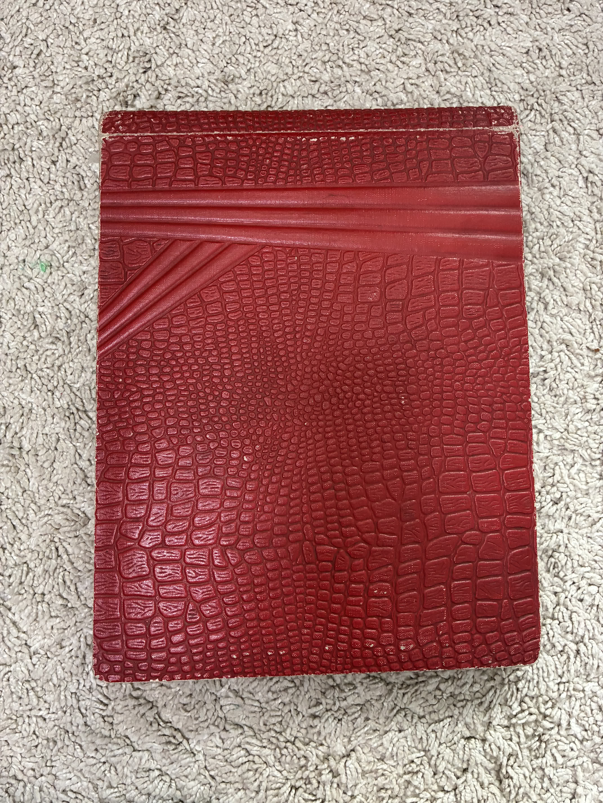
文革结束后，一家人终于开始重聚。范瑶珠继续在乌鲁木齐市第一人民医院中医科工作至退休，之后被返聘两年。
约1984年，外孙女李宜斐出生，家族第三代唯一的血脉。她的童年有外公外婆完整的陪伴：红山公园、博格达宾馆、北门医院家属院。1980年代，彩色胶卷开始普及，她的照片从黑白变成了彩色。
1990年春，孙钢四兄妹在杭州重聚。大哥是国民党，三弟是共产党地下党，小妹跟母亲去了台湾又去了美国，孙钢自己留在了新疆。四个人，四种政治身份，四十一年分离，见面时都已年近七十。
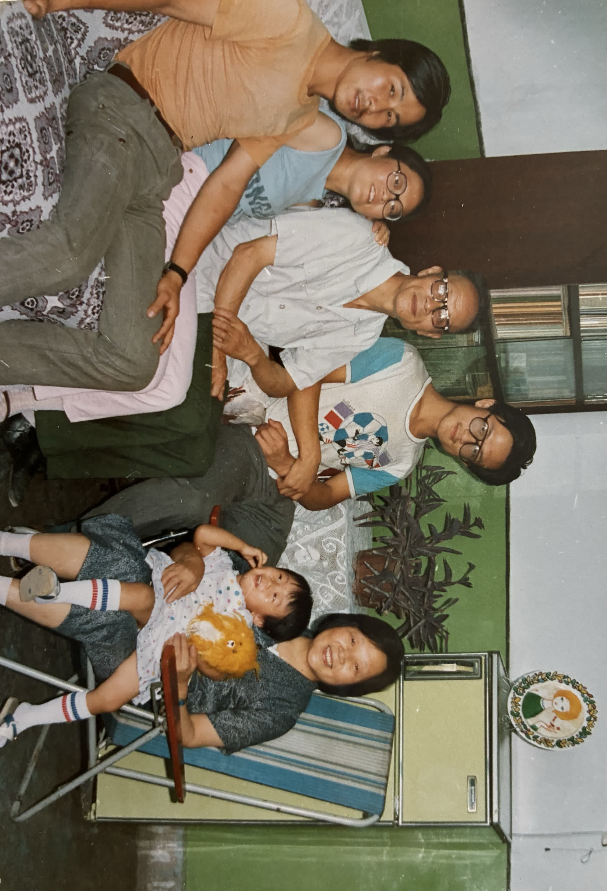
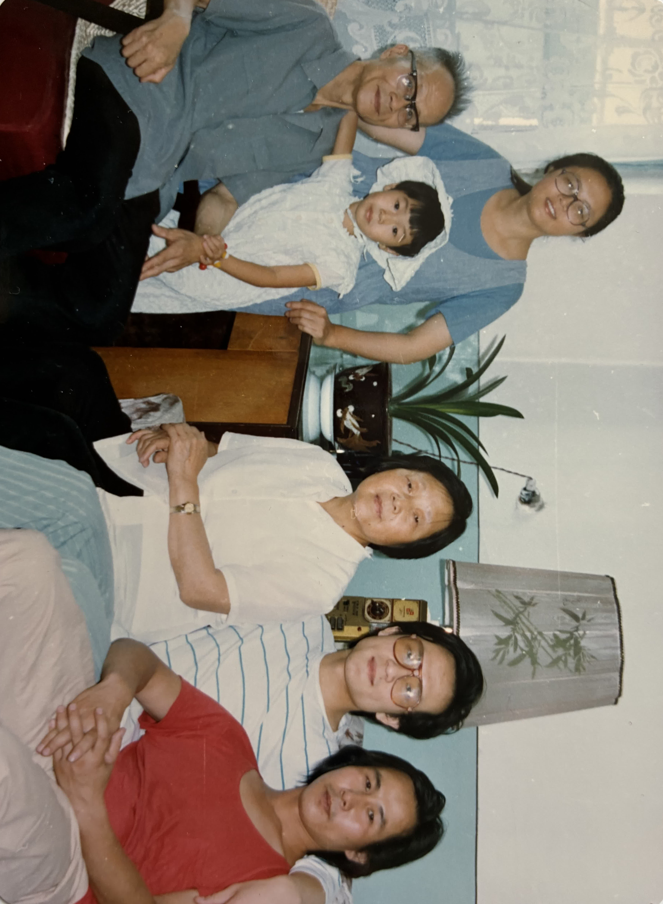
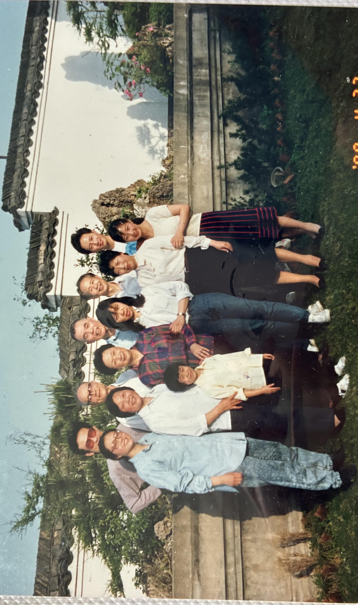
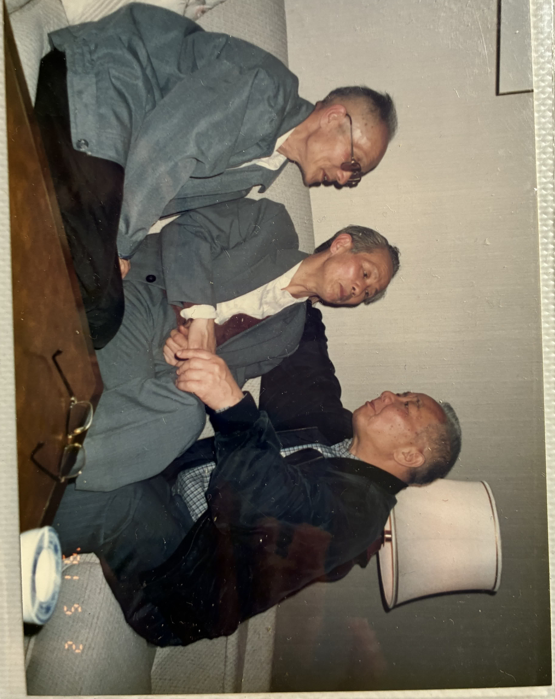
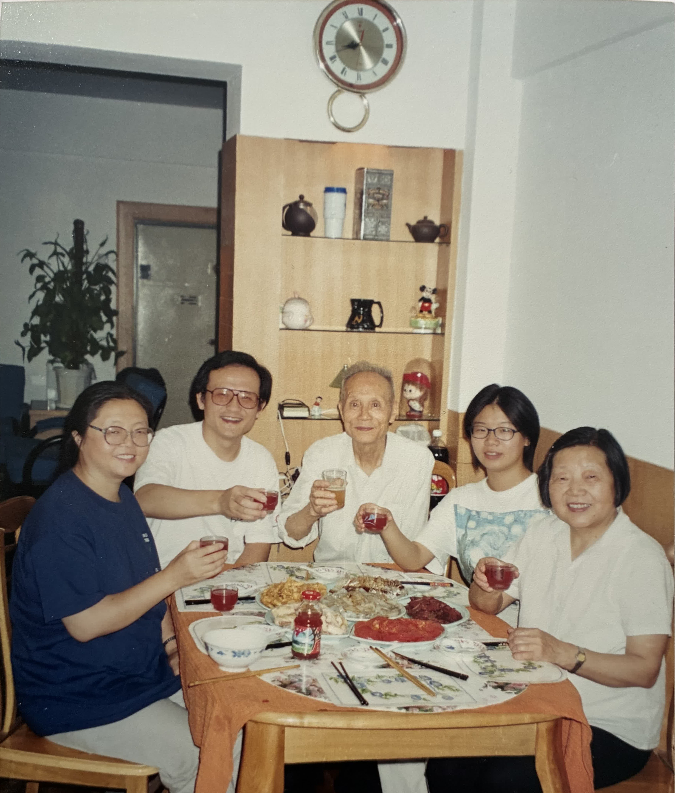
2019年9月23日，范瑶珠在乌鲁木齐去世。八十八岁。
2020年8月3日，孙钢走了。九十五岁。从医生断言他活不过三十岁的那一天起，又过了将近七十年。
他们合葬在乌鲁木齐东山生态园公墓。
墓碑朝东。朝着上海的方向。朝着建瓯的方向。朝着他们七十多年前出发的地方。
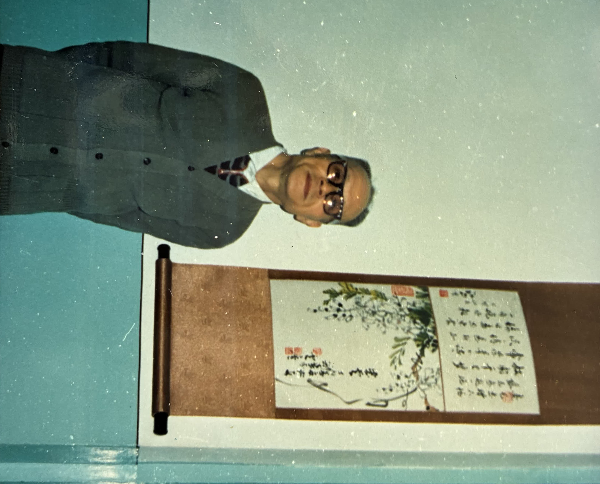
爱是十七岁独自上船。是在书页里夹进一张小纸条。是把自己的腰带系在卡车铁架上，颠颠簸簸前往新疆，四十天，不回头。是“谁回来谁是逃兵”。是来自上海的食物。是乘着秦腔剧团的卡车追到新疆。是手工给黑白照片涂上颜色。是把十二岁的女儿推出门去——抱着五个月的儿子，往东走。
是面朝东方。
爱不是没有代价的。那个被强留在新疆、1963年死在哈密的哥哥，是她一生的痛。那个被当场改了名字、用了十一年的“孙文革”，是女儿被时代撕掉的一页。
而这一切——所有这些选择，所有这些代价——拼在一起，才是一个人真正活过的证据。